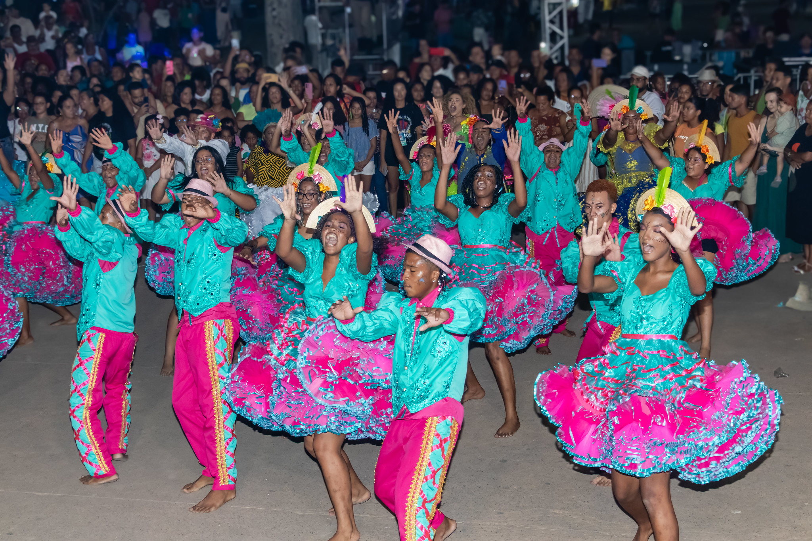
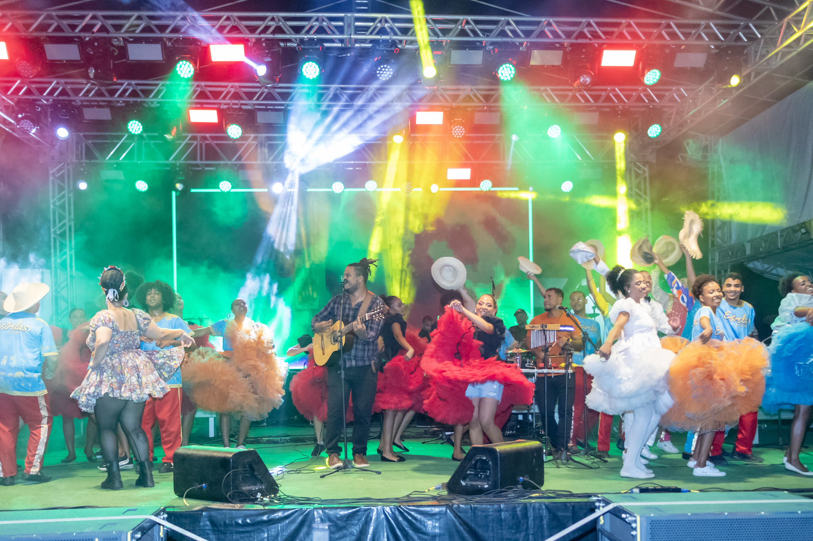
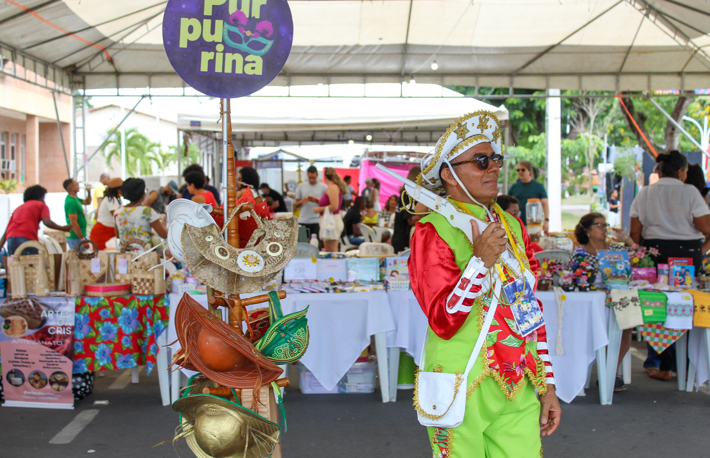

Dança, figurino e energia popular
As apresentações ocupam a festa com movimento, cores vibrantes e a alegria coletiva que transforma cada noite em celebração

O Festival de Forró de Amargosa celebra a força da música nordestina, reunindo palco, dança, artistas e manifestações culturais em uma atmosfera de encontro
Inspirado no clima acolhedor do especial de São João, este subsite destaca o ritmo, a presença popular e a memória afetiva que fazem o forró pulsar na Cidade Jardim

As apresentações ocupam a festa com movimento, cores vibrantes e a alegria coletiva que transforma cada noite em celebração

A programação também aproxima o visitante das expressões locais, com memória cultural, personagens populares e produção criativa
Abra a galeria especial do portal principal para navegar pelos álbuns do evento e acompanhar os diferentes anos da festa